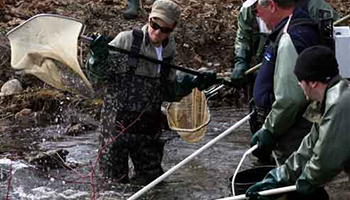

BODY
Membership
MEMBERSHIPS
ARE DUE!
YOU GET TO BE A TRAA MEMBER FOR A WHOLE YEAR FOR ONLY
$25.00DuesYour membership also adds another voice to our efforts in protecting and enhancing aquatic habitats in the London & area community.
YOU'VE TAKEN A LOT OF ENJOYMENT FROM THIS UNIQUE FISHERY. IT'S TIME TO GIVE BACK BY BEING PART OF THE SOLUTION.
Body Conetnt
About the TRAA
The TRAA Works at a Grassroots Level Within the Thames River Watershed to:
- protect, enhance and regenerate a viable, multi-species, year-round fishery.
- promote and participate in environmental clean-up, pollution control and rehabilitation.
- breed, relocate and stock to re-establish or augment appropriate species of fish.
- promote environmentally sound sport fishing practices.
- form partnerships with community businesses, government agencies, special interest groups, landowners, and other stakeholders in the Thames River watershed.
- increase public awareness of the unique diversity of the Thames River Watershed, its challenges, its recreational opportunities and its vital importance to our community.
Rainbow Trout
Rainbow Trout
The rainbow trout (Oncorhynchus mykiss) is a trout and species of salmonid native to cold-water tributaries of the Pacific Ocean in Asia and North America. The steelhead (sometimes called "steelhead trout") is an anadromous (sea-run) form of the coastal rainbow trout (O. m. irideus) or Columbia River redband trout (O. m. gairdneri) that usually returns to fresh water to spawn after living two to three years in the ocean.
Hands-on Environmentalism
"Hands-on Environmentalism" is what we do ...
This is what sets the TRAA apart from other clubs and organizations. You'll find us right in the water clearing obstructions from streams, measuring returning salmonids & taking scale samples for DNA analysis, education through trout hatchery tours & stream walks, being a voice for the Thames River watershed & its inhabitants and the list goes on.